力学
水平投射
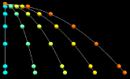重力中の質点の運動。
斜方投射
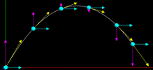 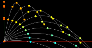重力中の質点の運動。速度表示、軌跡、ストロボ撮影ができます。また、同じ速度で角度を変えて多数の粒子を発射できます。
単振動と等速円運動の対応
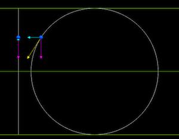 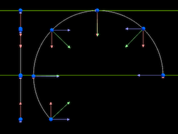単振動と円運動の対応が観察できます。速度、加速度、軌跡、ストロボ撮影ができます。
振動のシミュレーション

ばねにつないだ質点の運動をシミュレーション。パラメータを変えて比べてみると面白いよね。
二重剛体振り子
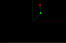 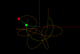剛体棒で質点二つをつなげた運動です。4次のルンゲクッタ法で積分しています。簡単な系ながら非常に複雑な運動になります。質点をドラッグして初期位置や剛体棒の長さを変更できます。（タッチ操作未対応）
熱力学
気体分子運動
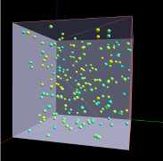 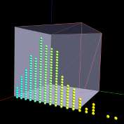温度と分子運動の関係をマックスウェル分布から描画したもの。止めるとヒストグラムを表示します。
希ガスの運動（小規模）
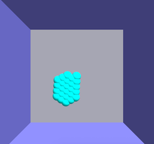２次元の小規模な分子動力学的なシミュレーション。壁面の反発係数を調整することで加熱、冷却を擬似的に行えます。キセノンの値を使っています。
希ガスの運動（大き目）
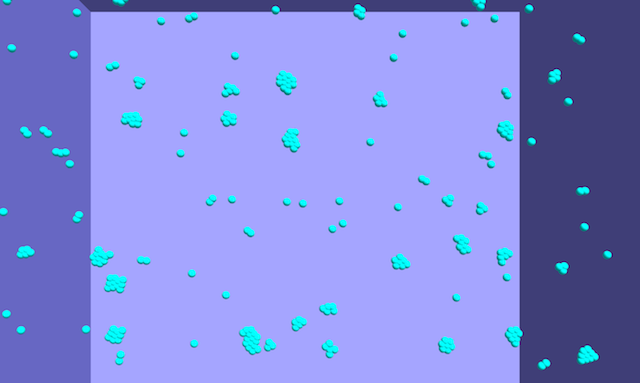少し大きな箱にしました。温度変化を抵抗力で調整できます。
希ガスの運動（３次元）
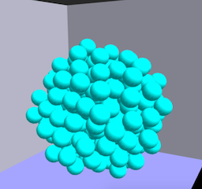３次元バージョンです。見にくいです。
波動
１次元
調和振動子の多体系
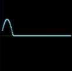 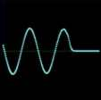 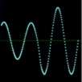質点をバネでつないだもの。左端を単振動させます。１次元の波のシミュレーションができます。
パルス波の重ね合わせと反射
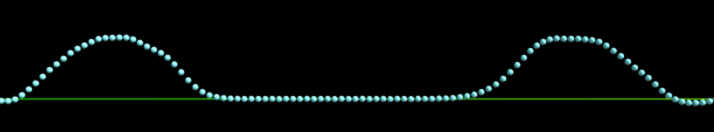質点をバネで繋いだもの。クリックで左端が上方向に一回だけ振動します。
合成波
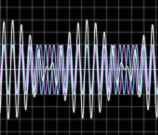２つの正弦波を合成します。定常波やうなりが観察できます。
縦波の観察
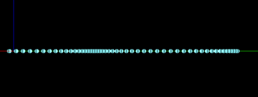波原を縦波方向に振動させます。うまいこと振動数を合わせると縦波の定常波をみることもできます。
縦波（位相の違う単振動）
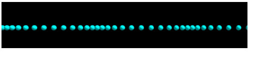位相の異なる単振動を並べたもの。
２次元
平面波のシミュレーション
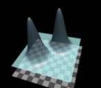 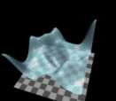くりっくしてください。波束ができます。
波動方程式に従って広がります。
波源から球状に広がる三角関数を描画。干渉を観察できます。
波の干渉（波動方程式）
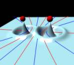 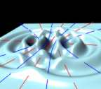波動方程式で２つの点波源の振動をシミュレーション。波が広がるに連れて振幅が減少するので、よりリアルな干渉が観察できます。
波の干渉（線）
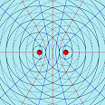波面を線描したものです。
波の回折
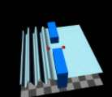 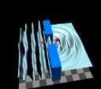隙間を通って平面波が出てきます。波動方程式に従って回折する様子が観察できます。
その他
プログラミングを勉強してくそげーをたくさん作ろう
色塗りゲーム５×５は解けるの？
数字あてゲーム暇つぶし
よけるゲーム腹の立つくそげー初めから詰んでることもありますが腹を立てないでください
ビット画像
ビットマトリックス16進数で画像表示する仕組み
＊ソースのダウンロードはこちら「Clone or download」から
参考文献
- 遠藤理平（2013）「HTML5による物理シミュレーション」-JavaScriptでThree.js/jqPlot/jQuery UIを使う 株式会社カットシステム
- 遠藤理平（2013）「HTML5による物理シミュレーション 波動・拡散編」-JavaScriptライブラリとCanvas 2D Context/Web Workersを使う 株式会社カットシステム